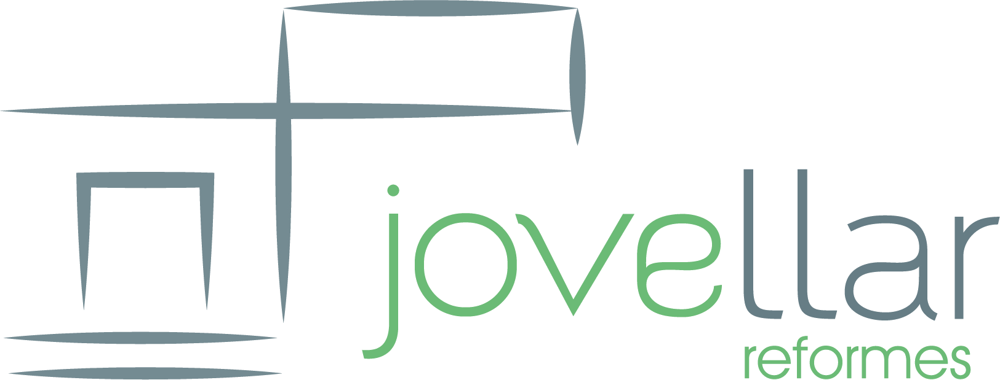

Sheet 01The logo

[reduced version /
symbol only]
symbol only]
[what the symbol means — note in red]
Visual identityReformes · home renovation[year]
[short note on the idea] ↘
B. Visual identity — 02 / 03
Jove Llar is a home renovation company. [What they needed — 1 sentence.] [The idea behind the identity — 1 sentence.]
Sheet 01The logo

[what the symbol means — note in red]
Sheet 02Colour
{{k.name}}
{{k.code}}
[the colour rule — note in red]
Sheet 03Type
Headlines[typeface]
[headline sample]
[where it's used]
Text & web[typeface]
[text sample]
[where it's used]
Sheet 04 — In useCards · van · uniform · web